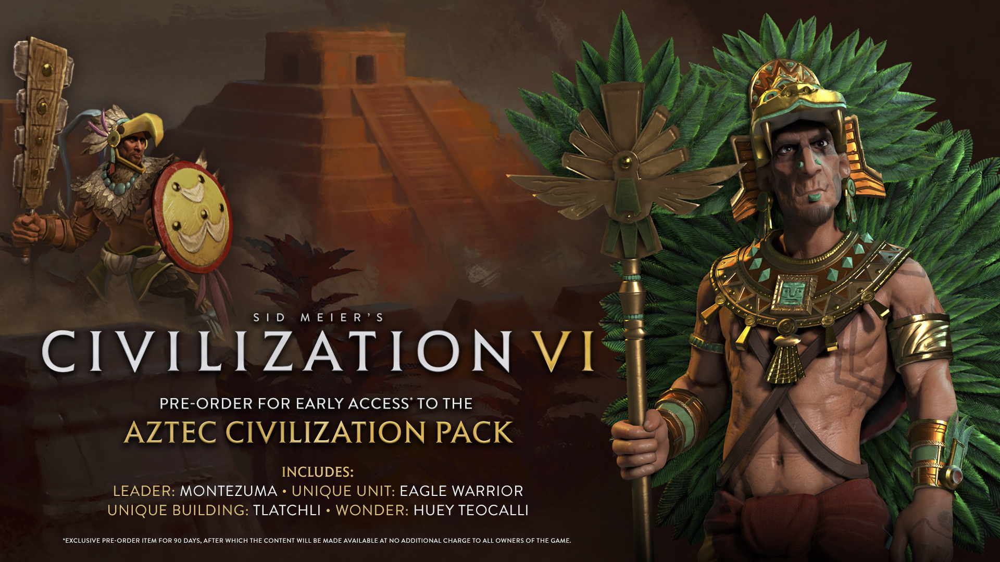

文明帝國6
|
發行日期 : 2016年10月21日
|
|
遊戲內容
地塊會為城區會提供不同的加成，但有一定的局限性。例如，山地地形有助於觀察星空，因此能為校園型城區提供特殊的加成，但同時森林或叢林地形又能供大學和研究室在生物群落內研究物種多樣性以反映科學的進步，因此玩家需要仔細選擇。此外，玩家可以選擇攻擊一個特定城區而非城市中心，從而影響城市的運作。但是，玩家能於城區中新增新戰略以增加城市的防衛。例如在城區設置軍事營地，當敵方隊伍接近城市，他們除了遭受來自城市的攻擊外，亦會被軍事營地攻擊，令他們可能需要轉為攻擊軍事營地，再奪取城市。